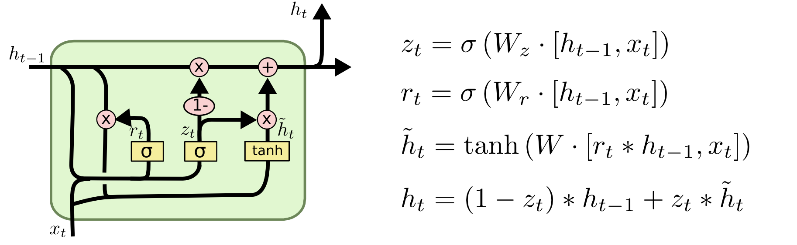

TL:DR 本文属于入门级课程101，用图文并茂的方式详细的介绍了LSTM的工作原理。
神经网络
本文假设你已经了解最基本的神经网络的知识，为了更好的理解本文内容，本文先简单回顾一下神经网络的一些重要的术语和符号，这些符号将在后续的内容中持续使用。
矩阵表示下的神经网络
假设： * $x$是input layer的值 * $W$是hidden layer的权重 * $h$是hidden layer的输出值 * $V$是hidden layer到output layer的权重 * $y$是output layer的值 * $\phi$是激活函数，常见激活函数与特性请见神经网络里的激活函数, 这里使用$\sigma$表示sigmoid函数 * $[x,y]$表示两个列向量，在列的维度上concatenate
则有：
$$ h = \phi (Wx) $$
$$ y = Vh $$
下面是大意图：
 TODO: 替换本图
TODO: 替换本图
RNN
应用场景
现实生活中很多事情都是序列的，后面的事情和前面是存在上下文关系的，单从一个片段是无法做出判断的。比如：你向上扔一个苹果，在任意时刻，你只能得到一个苹果的瞬时照片，单从照片你根本没法正确推测这个苹果的运动状态的，成功的推测苹果的运动状态，需要模型具备记忆能力能够记住之前苹果的位置信息。传统的神经网络只能判断一个瞬间状态的情况，不具备这种记忆的能力，因此在很多复杂的场景中无法适用。为此人们提出了RNN（Recurrent Neural Network)通过将上一个场景的信息引入下一个场景的方式来记住重要信息。
RNN原理
既然上一个场景的hidden layer的值中包含了场景信息，那么理所当然的我们认为hidden layer中包含了有用的上下文知识。所以RNN就是在当前的预测中引入上一个场景的hidden layer值：
$$ h_t = \phi (W x_t + U h_{t-1}) $$
$$ y_t = V h_t $$
其中： * $ht$是$t$时刻的hidden layer的值 * $h{t-1}$是$t-1$时刻（亦即上一个时刻）的hidden layer的值
缺陷
尽管RNN成功记忆了部分上下文信息，但存在一个很大的缺陷，那就是它很难记住长期的记忆。还是上面抛苹果的例子，RNN能够记住短期的上下文，所以在后期它能够识别出苹果在加速下落，但是由于没有记住比较久远的苹果先是上升的这个信息，因此RNN只能识别出这个苹果是下降的。
LSTM
为了解决这个问题，人们提出了LSTM（Long Short-Term Memory）网络，LSTM最大的特点就是能够记住长期记忆。是目前工业界和学术界最重要的RNN实现。
工作原理
LSTM有两个重要的state或者memory：
* 长期记忆 (long-term memory: $lsm$, 通常被称为cell state, 标识为$C$)
* 工作记忆 (working memory: $wm$, 通常被称为hidden state, 标识为$h$)。
一个学习迭代有一下几个部分： * 选择性遗忘部分长期记忆：将记忆中不需要的记忆移除 * 将现有的一些信息加入到长期记忆中 - 计算候选长期记忆 - 选择函数 * 从long-term memory中提取working memory - 计算候选的working memory - 选择函数
选择性遗忘部分长期记忆
这个部分也称之为forget gate layer
遗忘函数/遗忘门(forget gate)
我们先决定哪些长期记忆需要被遗忘（或者保留）。我们使用一个单独的浅层神经网络来学习。在$t$时刻：
$$ remember_t = \sigma (W_r x_t + U_r wm_{t-1}) $$
这里的$remember_t$是一个boolean序列，长度和$lsm_{t-1}$相同，通常被称为forget gate。值1表示保留$lsm_{t-1}$对应位置的数值，0则表示抛弃或者删除。
上述公式还可以表示成：
$$ f_t = \sigma (W_f \cdot [ h_{t-1} , x_t ] + b_f) $$

保存下来的长期记忆
有了遗忘函数后，我们就能确定保存下来的长期记忆是什么了。在$t$时刻：
$$ olsm_t = forget_t \odot lsm_{t-1} $$
增加新的长期记忆
除了有些某些老的记忆需要继续保留，我们需要把当前的一些重要信息添加到长期记忆中。
计算候选的长期记忆
首先算出来全体候选记忆。在$t$时刻：
$$ lsm’_t = \phi (W_l x_t + U_l wm_{t-1}) $$
这里的$lsm’_t$代表可能加入长期记忆的记忆序列，长度和$lsm_{t-1}$相同。这里的$\phi$函数常常选择$tanh$函数。
上述公式还可以表示成： $$ \tilde{C}_t = \phi (W_C \cdot [ h_{t-1} , x_t ] + b_C) $$
选择函数
有了候选记忆后，需要一个选择函数负责实际选择哪些记忆可以加入长期记忆。在$t$时刻：
$$ save_t = \phi (W_s x_t + U_s wm_{t-1}) $$
上述公式还可以表示成： $$ i_t = \sigma (W_i \cdot [h_{t-1},x_t] + b_i) $$
新的长期记忆
有了候选的长期记忆和选择函数后，我们就可以确定哪些记忆是要添加到长期记忆的。在$t$时刻：
$$ nlsm_t = save_t \odot lsm’_t $$

更新长期记忆
既然有了遗忘和更新机制，那么最终的长期记忆也就可以确定了。在$t$时刻：
$$ lsm_t = olsm_t + nlsm_t $$
上述公式还可以表示成： $$ C_t = f_t \odot C_{t-1} + i_t \odot \tilde{C}_t $$
其中$\odot$表示element-wise product, 如果使用*替代，则能得到：
$$ C_t = f_t * C_{t-1} + i_t * \tilde{C}_t $$

应用长期记忆
长期记忆需要应用在当前的工作记忆中才有作用。
选择函数
从上一个工作记忆和当前输入中确定选择函数。在$t$时刻：
$$ focus_t = \sigma (W_f x_t + U_f wm_{t-1}) $$
上述公式还可以表示成： $$ o_t = \sigma (W_o \cdot [h_{t-1},x_t] + b_o) $$
候选的工作记忆
工作记忆是从长期记忆转换来的。在$t$时刻：
$$ wm’_t = \phi (lsm_{t-1}) $$
其中这里的$\phi$常常选择$tanh$
上述公式还可以表示成：
$$ \tilde{h}_t = \phi (C_t) $$
更新工作记忆
既然有了候选工作记忆和选择函数，那么最终的工作记忆也就确定了。在$t$时刻：
$$ wm_t = focus_t \odot wm’_t $$
上述公式还可以表示成：
$$ h_t = o_t * \tilde{h}_t $$

变种
LSTM诞生后，不断有人改进模型，至今LSTM已经有很多变种了(请参考[参考文献]部分)。本节将介绍其中最重要的两个变种：Peephole LSTM和Gated Recurrent Unit
Peephole LSTM
普通的LSTM的所有的门的决策全部都是由输入$x$和$wm_{t-1}$决定，Peephole LSTM改进了门的实现，让$lsm_{t-1}$也参与门的决策。

Coupled Input and Forget Gate (CIFG)
既然forget gate和input gate都是控制更新long-term memory（$C$）的，那么他们可以合并成为一个update gate:forget gate忘记的信息全部由input gate提供。

Gated Recurrent Unit (GRU)
GRU不仅使用了update gate替代了forget gate和input gate,而且将long-term memory ($C$)和working memory（$h$）合并了，并做了一些细微的调整。由于简化了原有LSTM的结构，速度更快，目前流行度不断增加。
